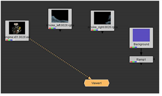
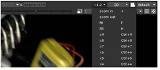
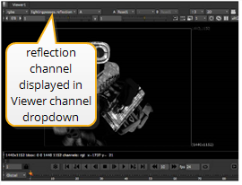

要在查看器窗口中显示图像:
| 1。 | 将连接器从查看器节点拖到读取节点上 发动机.v01 剪辑。 |

这里有一个替代方法: 选择 发动机.v01 剪辑节点，然后按 1 连接到查看器节点。 Nuke 在查看器窗口中显示节点的输出。
| 2. | 按下 Alt 键 (Mac 用户按 选项 ) 和鼠标左键，然后将鼠标指针拖动到查看器窗口上以进行平移。 |
| 3. | 新闻 Alt (Mac 用户按 选项 ) 和鼠标中键，然后拖动以放大/缩小。您还可以使用查看器顶部的 “缩放” 下拉菜单来放大视图。 |

| 4. | 新闻 F 将当前图像放入查看器窗口的边框中。 |
这张图片有不同的 通道 您可以查看的信息。“RGB” 标签出现在顶部，因为查看器现在显示红色、绿色和蓝色通道的结果。
| 5. | 要查看各个颜色频道，请按 R (红色), G (绿色), B (蓝色) 或 一个 (阿尔法)。当您按每个键盘快捷键时，查看器顶部的标签会反映显示的频道。 |

| 6. | 再次按下通道键盘快捷键之一以返回 “RGB” 显示，或选择 RGB 从观众的频道下拉菜单。 |
除了红色、绿色、蓝色和 alpha 的标准颜色通道之外，该图像还包括镜面高光、反射和其他蒙版的通道。
| 7. | 要查看其他频道，请按 一个 显示 alpha 通道，然后选择 Lightingpass.reflection 观众频道下拉菜单中的频道。 |

现在可以从图像文件中看到反射遮罩。
| 8。 | 选择 Rgba.alpha 从查看器通道下拉菜单中，按 A 键时将其重置为首选通道。 |
| 9. | 新闻 一个 再次切换显示和显示所有颜色通道。 |
|
|